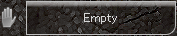
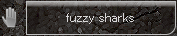
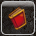
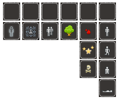
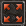

Frostbite
A MUD client for Dragonrealms
2 User Interface
The Frostbite application includes number of user interface elements such as the toolbar, command line, main game window, dock windows, navigation compass, round time display and a timer bar.
The frostbite user interface is designed to best work with resolutions 1366x768 and up.
Toolbar
The toolbar is set up to indicate player status and provide control functions.
-
The wield indicator allows quickly to see items that are being held in the left or the right hand.
 
-
The spell icon indicates currently active spells as a mouse cursor activated tooltip.

-
The status indicator displays different forms of character conditions.
 invisible, webbed, grouped, hidden, bleeding, standing stunned, kneeling dead, sitting prone
The quick-buttons enable to send pre-configured commands to the game server upon clicking. The settings dialog for configuring quick button actions can be triggered by right-clicking on the buttons.

Vitals indicator shows the character health status.
 - health
- health
 - concentration
- concentration
 - fatigue
- fatigue
 - spirit
- spirit
-
Full screen button allows to enter into full screen mode to make the full use out of all the available screen space.

Dock windows
The game text is divided up between separate game windows. The main window holds general game text while the dock windows filters out rest of the data such as player experience, current room descriptions, thoughts, arrivals, deaths and conversations.
The standard Qt GUI allows to stack dock windows on top of each other and to place them adjacently to each side. In the main window area, the dock windows can be placed on top, left or right of the screen.

Command line
As this is a client for a text-based game the majority of user interaction takes place in the command line, by sending commands to the game. However the command line includes more functions than just allowing to enter game commands. Command line can be used to run scripts, it includes functions like a tab word completer for some of the game commands and it displays the game round times.


Navigation compass
The graphical user interface for Frostbite is in overall based on GUI standard formats although it includes some custom elements like the navigation compass, which helps to better understand and visualize available movement paths.

Timer bar
The timer bar enables users to set timers for tasks or actions that are not regulated by round times. For example boat travel or aiming a ranged weapon. Timers can be triggered by any text highlighter event.